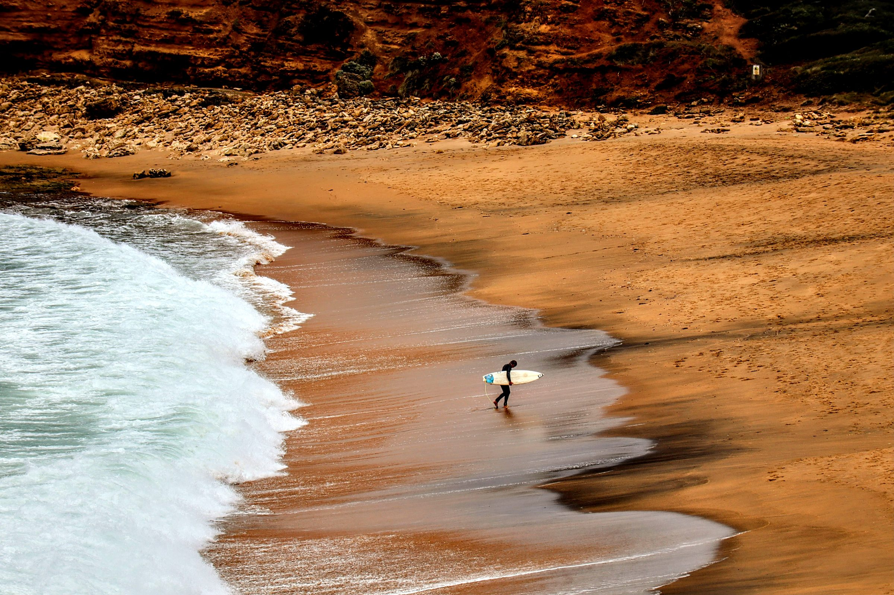

Senior Digital Marketer · Creative · Bristol, UK
I build marketing that performs — and I build most things myself.
Bristol-based Senior Digital Marketer with over 11 years scaling B2B and B2C brands across the climate and sustainability sector. Strategist by trade, hands-on by nature — equally comfortable owning the go-to-market plan and shooting the brand film that brings it to life.
Who I am
I'm Joe — a Bristol-based Senior Digital Marketer with over 11 years scaling B2B and B2C brands across the climate and sustainability sector. I've led go-to-market strategy, owned the tech stack, and delivered measurable results along the way, but I've always been just as comfortable doing the hands-on work myself, whether that's shooting a brand film or building a CRM system from scratch. Outside of work, that same instinct shows up everywhere: I'm partway through converting a van and renovating a house from the studs up, and I care, genuinely, about doing right by the planet while I do both.
What I do
Strategy first. Then I build it.
Hover a card (or tap, on mobile) to see what's behind it.
Strategy & Leadership
Hover / tapLead generation, brand positioning, team leadership, data-informed decision making.
Growth Marketing
Hover / tapSEO, SEM, AEO, PPC, Paid Social, ABM, campaign planning.
CRM & MarTech
Hover / tapSalesforce Marketing Cloud (AMPscript, SQL, Data Extensions), HubSpot, Zoho, Marketo, automation, journey mapping.
Creative Production
Hover / tapPhotography, videography, editing, animation, brand and design lead.
My Process
How I work
I start with the same question whatever the brief: what does the audience actually need to hear, and what's stopping them hearing it right now? From there it's strategy first — positioning, channels, the funnel — then the build: CRM and martech, content, creative, campaigns. I like being close enough to the execution that I can still do it myself when I need to, whether that's writing the copy, editing the video, or fixing the workflow that's broken.
Career at a glance
- 2019 – Present
Senior Marketing Manager, EcoAct / Schneider Electric (SE Advisory Services) - 2017 – 2019
Head of Marketing, Housing Hand - 2015 – 2017
Group Marketing Executive, HBXL - 2011 – 2014
BA (Joint Hons) Journalism, Media & Cultural Studies and Sociology, Cardiff University (High 2:1)
Tools
Qualifications
Branding
Brand & creative work
Brand and creative work for EcoAct and Schneider Electric's sustainability advisory business (SE Advisory Services) — report and factsheet design, campaign creative, and website rebrands.
assets/images/branding/<slug>/ folder.
IBEX
Add: what this was, your role, and the outcome.
CAC
Add: what this was, your role, and the outcome.
DOW
Add: what this was, your role, and the outcome.
SEED
Add: what this was, your role, and the outcome.
FTSE / SRP
Add: what this was, your role, and the outcome.
A to Zero
Add: what this was, your role, and the outcome.
ECLR
Add: what this was, your role, and the outcome.
Climate Risk Factsheet
Add: what this was, your role, and the outcome.
Digital Decarbonisation Factsheet
Add: what this was, your role, and the outcome.
Climate Adaptation Factsheet (ES)
Add: what this was, your role, and the outcome.
Sustainability Report (FR)
Add: what this was, your role, and the outcome.
EcoAct Website Rebrand
Add: what this was, your role, and the outcome.
Retargeting Ad Campaign
Add: what this was, your role, and the outcome.
Photography
Event, wedding, corporate & travel
A selection across the four areas I shoot most. Drop images into assets/images/photography/<category>/ and swap in the thumbnails below.
<img> pointing at the matching folder — see the Travel gallery below for the pattern.
Event
Add a few of your best event shots.
Wedding
Add a few of your best wedding shots.
Corporate
Add a few of your best corporate shots.
Travel




Strategy
The campaigns, and the numbers behind them
Website relaunch & SEO/AEO growth
EcoAct / SE Advisory Services — a full website relaunch paired with an SEO and AEO push.
SEO-driven acquisition engine
Housing Hand — top-ranking pages generating consistent monthly revenue, with the team growing from one to several as a result.
Keyword rankings & multi-site launches
HBXL — core keyword rankings moved from position 7 to position 1.
Personal
The other half of the story
I don't think the two sides of this site are as separate as they look. This is where the other half gets some room.
The renovation+
I'm partway through a full renovation of a Victorian mid-terrace in Bristol (BS5) — a roughly £30,000 project I'm running DIY-first, bringing in trades only for the specialist work: structural, plastering, electrical. A structural engineer's already signed off the RSJ work, and a family friend with decades of Bristol Victorian renovation experience is my sounding board when I need a second opinion. Recent chapters include a full rewire, a bathroom conversion, and re-boarding a wall properly rather than rushing it.
The van+
I'm converting a 2014 Renault Trafic into a proper basecamp for weekends away — surfing, camping, and finding quiet spots to park up around the UK.
Outdoors & active+
Surfing, yoga, and staying properly active rather than just gym-active.
Travel+
I like travelling independently and sorting the logistics almost as much as the trip itself — most recently a trip to Spain.
Social ethics & climate change+
Sustainability isn't a professional pose for me — I was raised around it, and it's a big part of why I've built a career in this sector.
Activism+
I volunteer with Migrateful, supporting migrants and refugees through community integration. Earlier in my career, I helped organise the hikes and community days that built culture at EcoAct while it was still an independent scale-up — the same instinct, really, just in a work context.
Music+
Creative side-projects+
After Effects and motion graphics were a personal interest of mine long before they became part of my job, and I still enjoy building templates, lower thirds and stings just for the fun of it. I follow football closely too.
What drives it
Ethical. Sustainability-minded. Hands-on.
Ethical & sustainability-minded
Hands-on problem solver
Active & outdoorsy
Creative across mediums
Driven & ambitious
Community-minded
Let's talk
Currently exploring new opportunities
I'm currently exploring new opportunities in marketing leadership, particularly with sustainability and purpose-driven organisations. Based in Bristol, UK — open to remote, hybrid or Bristol-based roles.
Prefer email direct? joemichaelmayne@gmail.com
YOUR_FORM_ID in the form's action for a real Formspree form ID (free at formspree.io — sign up, create a form, copy the ID in). Until then the form won't actually send anywhere, so the mailto: link above is the reliable fallback.